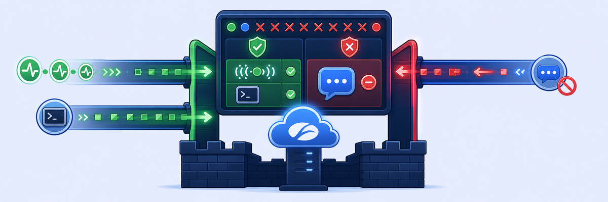

Lab 4: Configure Firewall Filtering Policy
Scenario: As the Zscaler administrator, you are tasked with blocking access to the external application WhatsApp so organizational users can't use it. At the same time, you need to make sure SSH and ICMP traffic is enabled for all other applications.
Objectives: By the end of this lab, you will:
- Verify the default firewall filtering policy to confirm it blocks all non-web traffic.
- Test default firewall rules that block ICMP and SSH traffic.
- Create and configure firewall filtering rules to allow outbound ICMP and SSH traffic.
- Create and configure firewall filtering rules to block access to specific external applications like WhatsApp.
- Verify firewall filtering policies with practical, real-world tests.

Thanks to Z-Tunnel 2.0 from Lab 3, every packet from the Client PC, not just web traffic, now reaches the Zscaler Cloud Firewall. Rules are evaluated top-down, and the first match wins.
- The Default Rule is Block/Drop, so ping and PuTTY simply time out instead of getting an error back. Why is "drop silently" a sensible default for a firewall, and why does it make troubleshooting slower?
- The allow rule for ICMP/SSH is Rule Order 1 and the WhatsApp block is Rule Order 2. Would swapping them change anything here? When would order matter?
- URL Filtering could also block
web.whatsapp.com. Why does the guide use a Firewall rule with a network application instead?
With Z-Tunnel 2.0, traffic on all ports and protocols is sent to Zscaler for inspection. In this task, you will generate non-web traffic from the Corp Client PC to confirm it is blocked by the default Block/Drop rule.
1 Verify the Default Firewall Policy
- In the Experience Center, type
Firewall Controlin the Search menu and select the result (Internet Access > Policy). - Confirm the following:
- The Default Rule is set to Block/Drop.
- No other rules would allow non-web traffic (see the example image).
Note: Rules such as the Office 365 One Click Rule, Zscaler Proxy Traffic and the Recommended Firewall Rule explicitly allow specific traffic that relevant features need to work. ICMP and SSH traffic in this lab exercise will not match any of these rules, so it falls through to the Default Rule until you explicitly allow it in later steps.
2 Test the default firewall policies on the Corp Client PC VM
- Generate non-web traffic through Zscaler Client Connector. Open a command prompt and type:
ping www.google.comNote: This should fail with the request timing out, because the outbound ICMP packets are dropped by the Default Firewall rule.
- SSH traffic test:
- Open PuTTY (double-click the desktop icon).
- In the Host Name field, enter:
github.com - Click Open.
Note: This should fail. Normally the session would prompt for a username and password. Because the outbound TCP connection is dropped by the Default Firewall Rule, the session shows a PuTTY Fatal Error after timing out (~20 seconds).
3 End the unsuccessful sessions
- Close the command prompt.
- Exit PuTTY by closing the application.
The ICMP and SSH traffic blocked in the previous task now needs to be allowed through. In this task, you will configure the firewall policies to allow this traffic.
1 Create a Firewall Filtering Rule to allow ICMP and SSH
- In the Experience Center, type
Firewall Controlin the Search menu and select the result (Internet Access > Policy). - Click Add Rule.
- Configure the rule:
- Actions: make sure Network Traffic is set to Allow.
- Rule Name:
ICMP_SSH - Rule Order: 1
- Rule Status: Enabled. New rules may start out Disabled, so confirm the rule is Enabled before saving.
- Use Add Criteria to add the student user as a rule condition.
- Use Add Criteria to add Network Services as a rule condition.
- Search for and select ICMP and SSH.
- Confirm that the selected student user and both services appear in the rule criteria.
- Under the Actions section, make sure Network Traffic is set to Allow.
- Save the rule, then activate the pending changes from the activation menu.
Caution: A saved rule is only pending. Click the activation icon (cloud with arrow) in the top-right corner and Activate, or your test will still hit the Default rule.
2 Test ICMP traffic with the new rule
- On the Corp Client PC, open a command prompt and run:
ping www.google.com
Note: This should now get a response, because the outbound ICMP packets match the Allow ICMP_SSH rule and pass through the firewall.
3 Test SSH traffic with the new rule
- On the Corp Client PC, open PuTTY (double-click the desktop icon).
- Type
github.comin the Host Name field and click Open.
Note: PuTTY should now try to establish a TCP connection and prompt for a login. You'll probably be asked to accept the external server's fingerprint, which shows that the SSH packets match the Allow ICMP and SSH rule and pass through the firewall.
4 Close the sessions
- Close the Command Prompt window.
- Exit the PuTTY application.
In this task, you will create and activate a Firewall Filtering Policy that blocks access to the external application WhatsApp.
1 Create a Firewall Filtering Rule
- In the portal, type
Firewall Controlin the Search menu and select the result (Internet Access > Policy). - Click Add Rule to create a rule.
- In the Add Firewall Filtering Rule window, enter:
- Actions: set Network Traffic to Block/Drop.
- Rule Name:
Restrict_Whatsapp - Rule Order: 2
- Rule Status: Enabled. Confirm the rule is Enabled before saving.
- Use Add Criteria to add the Student Admin user as a rule condition.
- Use Add Criteria to add Network Applications as a rule condition. Search for and select WhatsApp.
- Review the selected criteria and Save the rule.
- Activate the pending changes from the activation menu.
2 Test the Firewall Rule
- Launch a web browser and go to
https://web.whatsapp.com
Note: Access to web.whatsapp.com should be restricted.
Note: URL Filtering Policies can block access to web.whatsapp.com, but that may not stop users who have the WhatsApp application installed on their system. A Firewall Filtering Policy blocks access at the network layer, which gives you complete enforcement of access controls.
ICMP_SSH allow (Network Services), 2 = Restrict_Whatsapp block (Network Applications). Build rules with Add Criteria, and remember: Save ≠ live, always Activate.